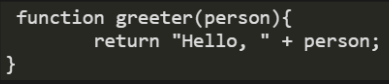
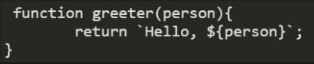
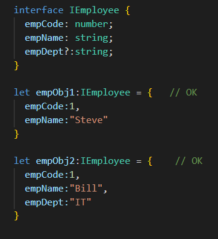
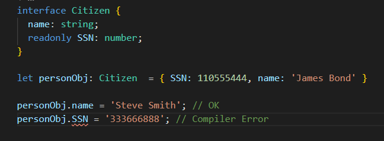

TypeScript
What is Typescript?
- Open source project with Microsoft's patronage
- Specially designed tool for small scripts
- Supports classes, interfaces & modules.
- Compiled JavaScript runs in any browser
- Allows cross-compilation
- You can extend JavaScript for writing large apps
- Adds support for classes, interfaces, and modules
- It is a superset of Javascript
- TypeScript supports JS libraries & API Documentation
- It is optionally typed scripting language
- TypeScript Code can be converted into plain JavaScript Code
- Better code structuring and object-oriented programming techniques
- Allows better development time tool support
- It can extend the language beyond the standard decorators, async/await
Installing TypeScript
There are two main ways to get the TypeScript tools:
- Via npm (the Node.js package manager)
- By installing TypeScript’s Visual Studio plugins
For NPM users:
Install
> npm install -g typescript
Compile
> tsc helloworld.ts
function greeter(person: string){
return `Hello, ${person}`;
}
> tsc helloworld.ts

> tsc helloworld.ts --t "ES6"

Types
Basic Types
Boolean
let isDone: boolean = false;
Number
let decimal: number = 6;
let hex: number = 0xf00d;
let binary: number = 0b1010;
let octal: number = 0o744;
String
let color: string = "blue";
color = 'red';
Array
let list: number[] = [1, 2, 3];
Null and Undefined
let u: undefined = undefined;
let n: null = null;
Object
declare function create(o: object | null): void;
create({ prop: 0 }); // OK
create(null); // OK
create(42); // Error
create("string"); // Error
create(undefined); // Error
Tuple
// Declare a tuple type
let x: [string, number];
// Initialize it
x = ["hello", 10]; // OK
// Initialize it incorrectly
x = [10, "hello"]; // Error
Enum
enum Color {Red, Green, Blue}
let c: Color = Color.Green;
enum Color {Red = 1, Green, Blue}
let c: Color = Color.Green;
enum Color {Red = 1, Green = 2, Blue = 4}
let c: Color = Color.Green;
Any
let notSure: any = 4;
notSure = "maybe a string instead";
notSure = false; // okay, definitely a boolean
Void
function warnUser(): void {
console.log("This is my warning message");
}
Never
// Function returning never must have unreachable end point
function error(message: string): never {
throw new Error(message);
}
// Inferred return type is never
function fail() {
return error("Something failed");
}
// Function returning never must have unreachable end point
function infiniteLoop(): never {
while (true) {
}
}
Interface

Optional Properties
Readonly properties
